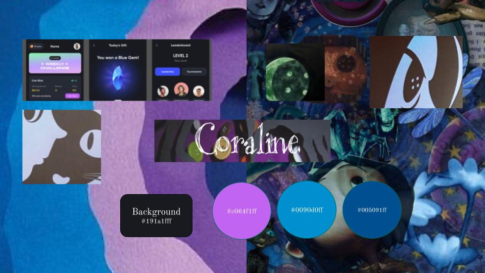
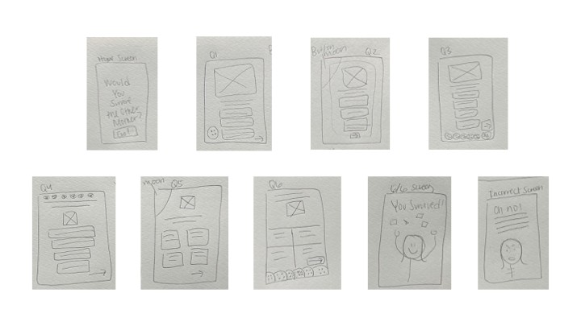

Coraline Interactive Quiz: Designing a Branching Narrative Experience
A self-initiated mobile UX project exploring interaction design, storytelling, and branching decision flows.
The project
What if Coraline's choices were yours to make?
Inspired by the 2009 stop-motion film Coraline, I designed a mobile quiz that puts users in Coraline's shoes. Every choice leads to a different outcome — escape the Other Mother, or get trapped forever. This project was about more than building screens. It was about designing an experience that felt immersive, eerie, and emotionally responsive.
Research
Starting with the source material.
Before opening Figma I immersed myself in the world of Coraline. I researched key plot elements and decision points from the film, visual themes including buttons, keys, stitched textures, and Victorian-inspired decor, and examples of branching path quizzes and decision-based narrative games to understand what makes them feel satisfying and tense.
Film Analysis
Studied key plot decisions Coraline faces in the film to shape the quiz questions and ensure they felt true to the story.
Visual Research
Explored the film's visual language — blues, purples, dark shadows, stitched textures, and eerie Victorian details — to inform the design direction.
Interaction Research
Studied branching path quizzes and decision-based narrative games to understand pacing, tension, and what makes choices feel meaningful.
Mood board
Capturing dark whimsy.
To capture the eerie, whimsical tone of Coraline I built a mood board around the film's visual identity. Blues and purples as the primary palette, stitched textures and button imagery, dark shadows balanced with moments of warmth, and typography that felt handwritten and slightly unsettling.

Storyboarding
Mapping the experience on paper first.
Before touching Figma I mapped the entire user flow on paper. Starting from the home screen and branching through 6 quiz questions, each decision leads to a different path — ultimately ending in escape or being trapped forever. Sketching first helped me understand the branching logic before worrying about visual design.

The prototype
Try it yourself.
The final prototype was built in Figma for iPhone 16 Plus. Every quiz answer triggers a tap interaction leading to the next question or an outcome screen. The prototype simulates the feeling of a fully functional app — including visual feedback on buttons and a final results screen that responds to your choices. Click through and see if you survive the Other Mother.
Reflection
What I learned.
This project taught me that interaction design is as much about emotion as it is about function. Every tap in this prototype had to feel intentional — the choice of which answer leads where, how long a transition takes, what the outcome screen says. Small decisions add up to a feeling.
Designing for a branching narrative also pushed me to think like a systems designer. I had to map every possible path before designing a single screen, which reinforced how important planning and flow mapping is before jumping into visual design.
What worked
Starting with paper sketches forced me to solve the branching logic before worrying about visuals. It made the Figma build significantly faster and more intentional.
What I would do differently
I would conduct usability testing with real users to see if the quiz questions felt clear and if the branching outcomes felt satisfying and fair.
What is next
With more time I would add sound design and micro-animations to deepen the eerie atmosphere and make each choice feel more impactful.